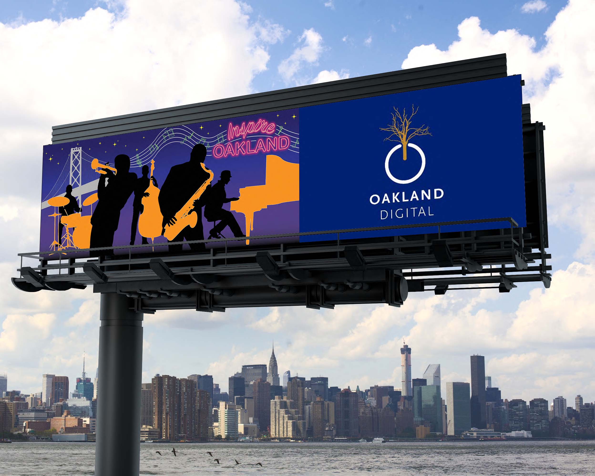

For my artwork, I wanted to highlight Oakland’s lively jazz scene without directly placing the notable jazz clubs I mentioned earlier, because there wouldn’t be enough space to properly highlight all of the notable clubs. So I decided to create a live jazz concert that is happening in front of the Oakland Bay Bridge at night by tracing out the silhouettes of musicians playing typically seen jazz instruments, such as the trumpet, saxophone, piano, double bass, and drum. The inspiration behind why I colored the instruments rather than just merging them with the musicians came from early 2000s iPod ads that highlighted the device on top of human silhouettes. Finally, the inspiration behind the use of neon light effect for the “Inspire Oakland” text and musical notes and lines derived from illuminating neon signs inside and outside of jazz clubs and bars like the ones mentioned before signifying late night live music. Additionally, the neon light effect give the overall artwork a more vintage and classic look that expresses Oakland’s rich history with jazz music.